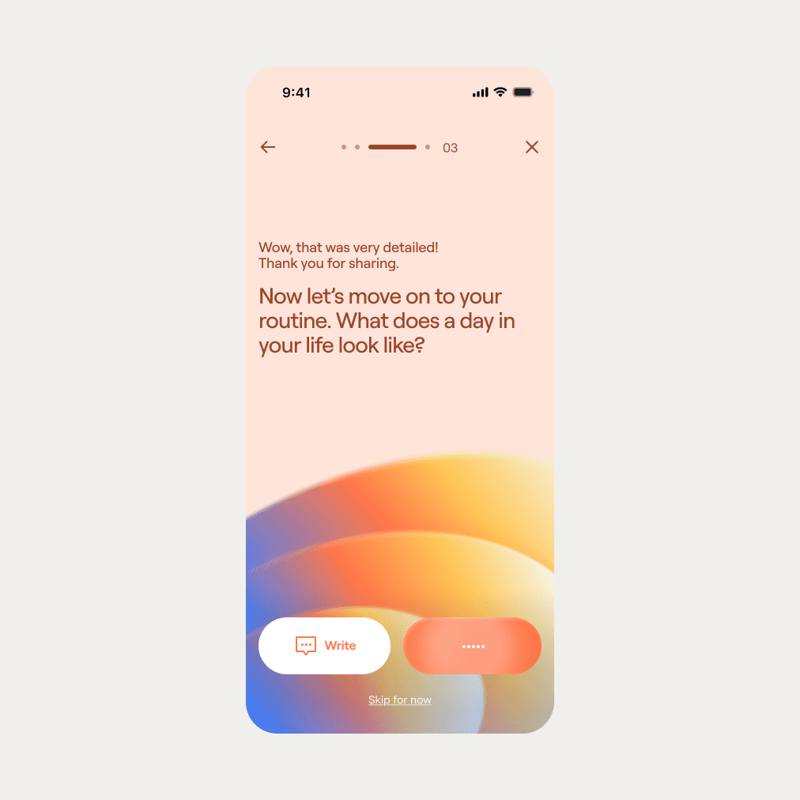

Niva,
care in balance.
An AI-powered family assistant that helps distribute the invisible work of care, so busy households can rest without planning first.
UX design · Interface design
Brand design
Interaction & motion
Visual system
Selected case study
The mental load of care is everywhere.
Families caring for children and aging parents often carry a second, invisible job: coordinating everyone else’s life.
We started with a simple question: could technology help make home responsibilities more balanced without asking already-busy people to manage another complicated tool?
The hidden calendar
Care work lives across messages, memory, and last-minute decisions. The interface needed to see the whole picture.
Delegation is emotional
People do not distribute tasks like a spreadsheet. Fairness needs context, trust, and a human tone.
Onboarding is the unlock
A conversational start lets the assistant understand a home before asking anyone to organize it.
A calmer assistant for the whole home.
Niva turns a family’s routines into a shared view of upcoming events, responsibilities, and rest. Its conversational onboarding reduces setup, while the home, calendar, and insights views keep people in control.
